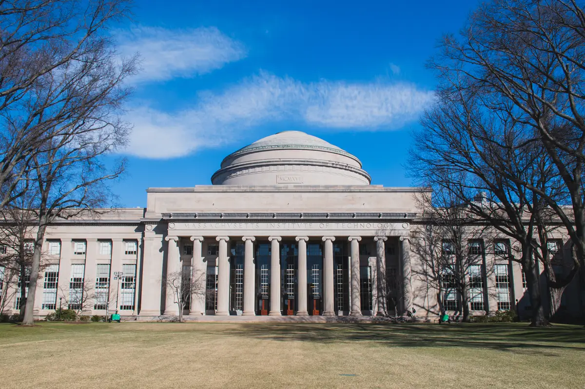
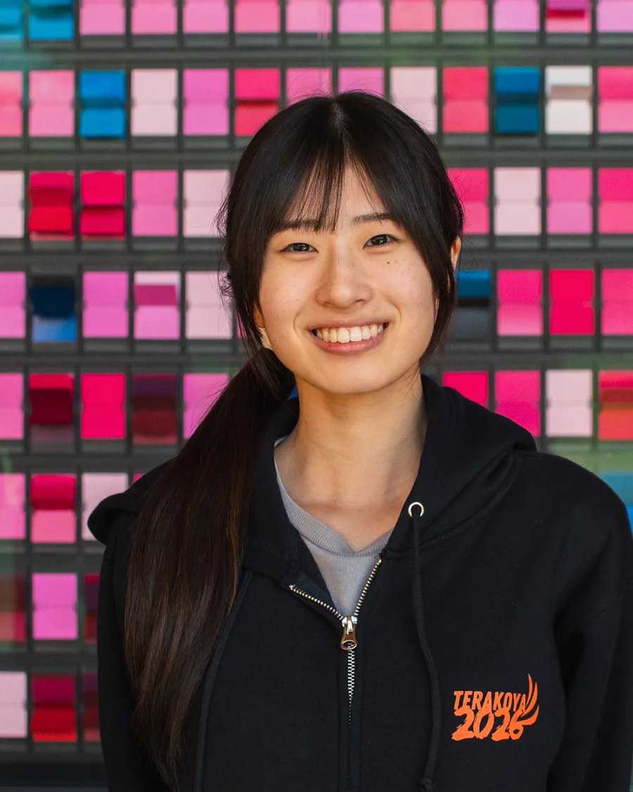
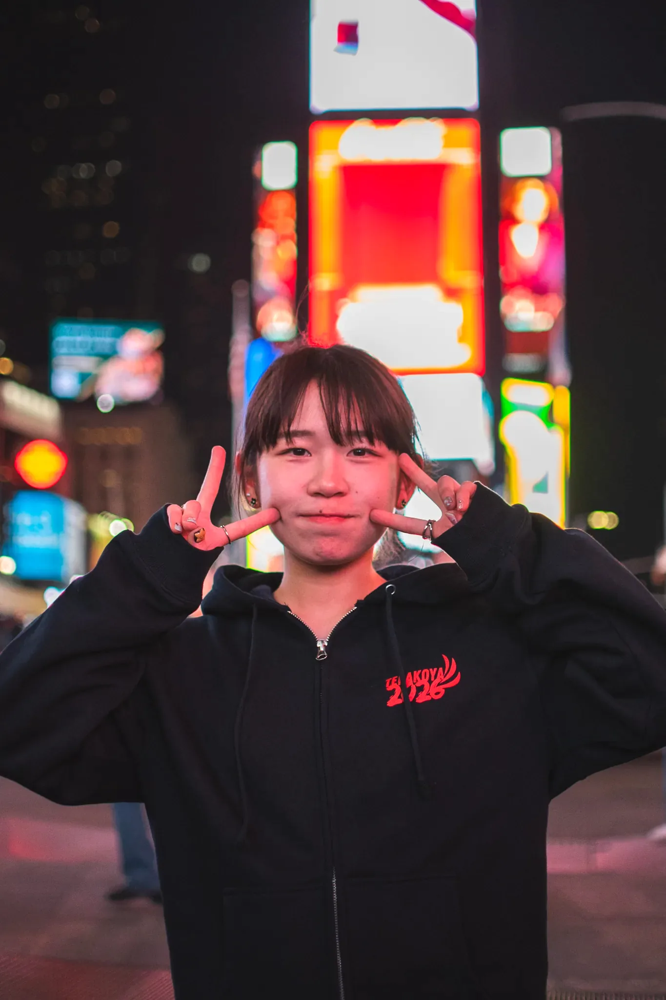

あなたの一歩で、 世界は広がる
高校生が自分の問いを持って渡米し、現地校で学び、自分でアポを取って人に会いに行く。
2027年3月、サンフランシスコ／ボストン・ニューヨークへ。
今すぐ申し込む
応募から帰国までの流れ
-
①まだ言葉にならない違和感から始める
整った探究テーマは要りません。「地元がどんどん寂しくなっているのに、みんな仕方ないと言う」くらいの荒さで出発します。応募時の志望理由は800〜1000字ですが、問われるのは完成度ではなく、何が引っかかっているかです。
-
②違和感を、自分の問いにする
出発前に5回の事前研修があります。第1回は2026年12月13日、以降は1月・2月と続き、2月中旬には現地バディとの交流も入ります。この期間に、違和感を「誰に何を聞けば確かめられるか」まで削っていきます。
- 1
- 2026.12.13
- 2
- 01.13
- 3
- 02.04
- 4
- 02 中旬
- 5
- 02.27②は 03.05

-
③現地校で学ぶ
現地の学校で授業に入り、登校日には同世代と同じ時間を過ごします。サンフランシスコ派遣にはUnity Assembly Day（登校日）が組まれています。
-
④現地バディと動く
到着後に現地バディと合流し、フィールドワークや活動を一緒に進めます。通訳がつくプログラムではありません。
-
⑤自分でアポを取って、話を聞きに行く
ここがこのプログラムの中心です。用意された見学先を回るのではなく、自分の問いに答えを持っていそうな相手を決め、自分でアポを取ります。過去には、米国教職員連盟の州支部に取材した参加者、ハーバード教育大学院の博士課程に話を聞きに行った参加者がいます。

-
⑥毎晩の振り返りで気づきを言葉にする
その日に見たこと・感じたこと・分からなかったことを毎晩言語化し、参加者全員で共有します。否定しない場を参加者自身が育てることを前提にしていて、スタッフは事前研修の段階から伴走します。
-
⑦発表として残す
現地で探究発表を行い、最終日にフェアウェルパーティーがあります。帰国後にも報告会があり、2027年4月11日にオンライン、4月17日に対面。持ち帰るのは思い出ではなく、誰に何を聞き、そこから何が分かったかの記録です。

世界をフィールドに、 自分だけの問いを深める グローバル探究
本プログラムでは、米国のイノベーションの中心地・シリコンバレーを訪れ、GoogleやAppleなどの最先端企業を見学。さらに、スタンフォード大学のキャンパスを訪問し、現役のスタンフォード大学生との交流を通して、グローバルな視野と刺激的な学びを体験します。
日程や特徴から選べる 3つのプログラム
応募から帰国までの流れは、3つとも同じです。変わるのは、行き先と日数、そして誰とどこに泊まるか。いずれも2027年3月、10日間か14日間です。
3つのコースから選べるよ！

-
San Francisco 3/6(SAT)3/15(MON) 10Days
西海岸の大学と企業を、自分の問いを持って回る10日間。
- 募集
- 10名
- 宿泊
- 団体宿泊（Airbnb）。ホームステイではありません
- 行程の軸
- Stanford大学の訪問とセッション、Google訪問、Apple Park訪問、Unity Assembly Day（登校日）

PROGRAM MANAGER
Kazuki
サンフランシスコ派遣の担当です。大学や企業を訪ねる行程の準備と、滞在中の伴走を受け持ちます。問いを持って動く10日間を、一緒に組み立てましょう。
サンフランシスコ派遣の日程 日付 午前 午後 宿泊 3/6土 SF着 ※現地時間 成田発／バディと合流 団体宿泊（Airbnb） 3/7日 サンフランシスコ フィールドワーク 団体宿泊（Airbnb） 3/8月 授業 バディと活動 団体宿泊（Airbnb） 3/9火 授業 バディと活動 団体宿泊（Airbnb） 3/10水 Stanford大学訪問 Stanfordセッション 団体宿泊（Airbnb） 3/11木 Google訪問 Apple Park訪問 団体宿泊（Airbnb） 3/12金 Unity Assembly Day（登校日）／授業＆バディと活動 団体宿泊（Airbnb） 3/13土 振り返り フェアウェルパーティー 団体宿泊（Airbnb） 3/14日 現地出発 飛行機 飛行機 3/15月 成田着 — — スタンフォードもGoogleも、自分の足で回るよ！
-
Boston & New York ① 3/6(SAT)3/15(MON) 10Days
ニューヨークで3日、ボストンで6日。都市を移りながら現地校に入る。
- 募集
- 13名
- 宿泊
- ホテルとホームステイ
- 行程の軸
- ニューヨーク（3月6日〜8日）からボストン（3月9日〜14日）へ移動します

PROGRAM MANAGER
Misako
ボストン・ニューヨーク①派遣の担当です。現地校とホームステイ先との調整を受け持ち、滞在中は参加者の相談に応じます。最初の一歩を、安心して踏み出せるように。
ボストン・ニューヨーク①派遣の日程 日付 午前 午後 宿泊 3/6土 — 羽田空港発 NY到着 ホテル 3/7日 NY フィールドワーク ホテル 3/8月 NY フィールドワーク ホテル 3/9火 ボストンへ移動 バディと活動 ホームステイ 3/10水 学校 バディと活動 ホームステイ 3/11木 学校 ハーバード大学ツアー ホームステイ 3/12金 学校 MIT大学ツアー／フェアウェルパーティー ホームステイ 3/13土 バディと活動 振り返り ホテル 3/14日 現地出発 飛行機 飛行機 3/15月 飛行機 羽田到着 — ニューヨークとボストン、2つの街で学ぶよ！
-
Boston & New York ② 3/16(TUE)3/29(MON) 14Days

3派遣でいちばん長い14日間。都市のあとに、バーモントの生活が入る。
- 募集
- 13名
- 宿泊
- ホテルとホームステイ（ボストンとバーモント）
- 行程の軸
- ニューヨーク（3月16日〜19日）、ボストン（3月19日〜23日）、バーモント（3月23日〜28日）

PROGRAM MANAGER
Nanako
ボストン・ニューヨーク②派遣の担当です。都市のあとに続くバーモントでの生活まで、毎晩の振り返りに同席し、気づきが言葉になるまで付き合います。
ボストン・ニューヨーク②派遣の日程 日付 午前 午後 宿泊 3/16火 — 羽田発 NY到着 ホテルに宿泊 3/17水 NY フィールドワーク ホテルに宿泊 3/18木 NY フィールドワーク ホテルに宿泊 3/19金 ボストンへ移動 ホストファミリーと活動 ホテルに宿泊 3/20土 ホストファミリーと活動 ホームステイ in Boston 3/21日 ホストファミリーと活動 ホームステイ in Boston 3/22月 ハーバード大学訪問 MIT大学訪問 ホテル 3/23火 バーモントへ移動 バディと合流 ホームステイ in Vermont 3/24水 学校 ホームステイ in Vermont 3/25木 学校 ホームステイ in Vermont 3/26金 学校 フェアウェルパーティー ホームステイ in Vermont 3/27土 ボストンへ移動 フィールドワーク ホテル 3/28日 飛行機 飛行機 3/29月 羽田到着 — — いちばん長い14日間。バーモントの生活も入るよ！


あなたは、どの立場で読みますか
選ぶ基準は英語でも成績でもありません

- 英語力は選考基準に入りません。 選考は志望理由と人間性などで総合的に判断され、語学力は問われません。
- 初めての海外でも参加しています。 パスポートを持っていない状態から出発した参加者がいます。
- 地方から出ています。 4年間で36都道府県から参加者が集まっています。北海道・高知・鹿児島から出発した参加者がいます。
- テーマが未完成でも始められます。 出発前に5回の事前研修があり、その期間で問いの形にしていきます。
- 応募できるのは、2026年10月の応募時点で高校1〜3年生。 日本の高校または高等専門学校に在籍し、保護者と学校の同意が必要です。
なぜ今か
派遣は2027年3月です。高校2年生なら、高校3年生になる前に自分の問いを一度外へ持ち出せる最後の時期にあたります。高校1年生なら、ここで持った問いを2年生からの探究と進路選択にそのまま接続できます。高校3年生なら、進路が決まったあとに視野を広げる時間として使えます。
自分の違和感がテーマになるのかどうかは、説明会で過去の参加者のテーマを見ると判断できます。
説明会に申し込む奨学金制度があるよ！
奨学金について
サンフランシスコ派遣には、参加費・渡航費・宿泊費が全額免除になる枠が1名分あります。給付型なので、返す必要はありません。
対象になる条件と、申請のときに出していただく書類は、いま確定作業を進めています。決まりしだい説明会でご案内しますので、費用の面で迷っている場合も、まず説明会で聞いてください。
大学生の参加枠があります
各派遣3名程度。高校生に帯同し、その学びの過程を見届けながら、自分自身も探究を行う立場です。引率スタッフではありません。
- 交換留学
- 語学と単位
- 海外ボランティア
- 体験
- インターン
- 職業理解
- ワールド寺子屋
- 自分の問いを持って会いたい相手を決め、自分でアポを取り、話を聞き、その日のうちに言語化して残す一連の手順
「誰に話を聞きに行けばいいか分からない」という状態のまま卒業しないための、10日前後の実地訓練だと考えてください。参加後にスタッフとして運営側に回る道もあります。
参加条件と選考枠
| 募集人数 | 各派遣3名程度 |
|---|---|
| 含まれないもの | 航空費／保険／1日3食の食費／ニューヨークのホテル／ニューヨーク〜ボストンの移動費（自己手配・自己負担） |
| 宿泊 | スタッフの宿舎に帯同、またはホテル。ボストン・ニューヨーク②はボストン／バーモントでのホームステイ |
| 選考 | 書類（志望理由500字以内）＋動画選考 |
| 奨学金 | 参加費が全額免除される給付型の枠が約1名分 |
参加条件・選考枠・高校生との関わり方は、説明会で確認できます。
参加枠と選考の流れを確認する参加者の声
- 96% 挑戦意欲の変化
- 99% キャリアへの影響実感
- 91% 他者信頼の向上
- 4.8/5 全体満足度
※出典: EdFuture Impact Report 2025（2022〜2025年度の累計・参加者アンケート）。個人差があり、結果を保証するものではありません。
VOICES 先に行った人が、何をしたか
-

ワールド寺子屋 2023 / サンフランシスコ
高校最後の春、経済的な理由で一度は諦めた留学に挑戦することができました。海外経験だけなく、「自分にも挑戦できる」という自信と、切磋琢磨しながら応援し合える仲間を得ました。参加後はEdFutureスタッフとして挑戦を支える側になりました。その後、トビタテ留学JAPANの制度を活用し、デンマークに長期留学、今はインドネシアで国連インターンに参加しています。海外経験も英語力もなかった私の最初の一歩を後押ししてくださった皆さんに心から感謝しています。
H.N さん（参加時高校3年生・東京都）
-

ワールド寺子屋 2025 / サンフランシスコ
「お金がないから海外なんて無理。」そう思っていた私の背中を押してくれたのがEd Futureでした。経済的な理由で夢を諦めかけていた自分が、勇気を出して一歩踏み出せたのは、その支えのおかげです。サンフランシスコで出会った人々や文化、景色、そして触れた新しい価値観は、今も私の大切な財産で、挑戦を続ける原動力になっています。プログラム終了後は、地元北海道で会社を起業し、挑戦し続けています。次は自分が、誰かの背中を押せる存在になりたいです。
S.O さん（参加時高校2年生・北海道）
-

ワールド寺子屋 2023 / サンフランシスコ
島で育った私は、自分の価値観はまだ狭いと思っていました。だからこそ留学に憧れていましたが、費用や距離の問題から、海外へ行くことを諦めかけていました。そんな中、先生の紹介でワールド寺子屋に出会いました。親を説得し、審査を通過し、海外で自ら行動した経験、そして負けたくないと思える仲間との出会いは、挑戦することへの自信を与えてくれました。今でも仲間の存在が刺激となり、新しい挑戦を続ける原動力になっています。
Y.T さん（参加時高校2年生・広島県）
-

ワールド寺子屋 2022 / サンフランシスコ
高校3年生の私は、「世界は広い」と初めて知りました。写真や誰かの話では決して得られない、「自分で見て、感じること」がどれだけ貴重なのか。離島で育ち、夢を語ることにどこか遠慮していた私も、同じ熱量で応援し、一緒に悩み、夢を実現している大人や仲間に出会えました。4年後の今、私は児童養護施設で働いています。今の私の夢は、どんな状況にいる子どもたちにも希望を持ってもらうことです。いつか私も、あの時背中を押してくれたたくさんの大人の1人になりたいです。
K.N さん（参加時高校3年生・鹿児島県）
-

ワールド寺子屋 2026 / ボストン・ニューヨーク
英語に自信がなく、知らない環境へ飛び込むことに大きな不安がありましたが、「挑戦してみたい」という気持ちを大切にしているEdFutureに出会い、自分の可能性を信じて参加を決意しました。現地では積極的に質問や交流を重ねることで、自分から一歩踏み出す勇気の大切さを実感しました。参加後はまず挑戦してみることが自分の成長につながると考えるようになり、新しいことに前向きに取り組めるようになりました。この経験は今後さまざまなことに挑戦していく原動力になると感じています。
S.A さん（参加時大学3年生・東京都）
「娘の人生に大きな影響を与えていただきました。日本中の子ども達が同等の経験や学びの機会が得られるように願っています。」
未来のために、多様な選択肢を

まずはオンライン説明会へ


- 保護者・友達との参加もOK
- 完全無料・オンライン開催
- 少しでも気になったら、まずは説明会へ
後援


- アメリカ大使館
- 在アイルランド日本国大使館
- アイルランド教育庁
協賛


メディア掲載


よくあるご質問
選考で語学力は問いません。判断されるのは志望理由と人間性などです。現地での通訳はつきません。バディの役割の範囲は説明会で案内します。
決まっていなくて構いません。出発前に5回の事前研修があり、その期間に自分の問いの形にしていきます。
できます。2026年10月の応募時点で高校1〜3年生、日本の高校または高等専門学校に在籍していることが条件です。
あります。書類（志望理由800〜1000字）と、11月15日のWEB個人面接30分の二次選考です。派遣候補者の発表は11月24日です。
派遣先で違います。サンフランシスコは団体宿泊（Airbnb）でホームステイはありません。ボストン・NY①②はホテルとホームステイの併用です。
派遣は2027年3月の春休みです。事前研修は12月13日、1月13日、2月4日、2月中旬、2月27日（②は3月5日）に行います。
サンフランシスコ派遣に全額免除の給付型が1名分あります。応募条件と提出書類は説明会で案内します。